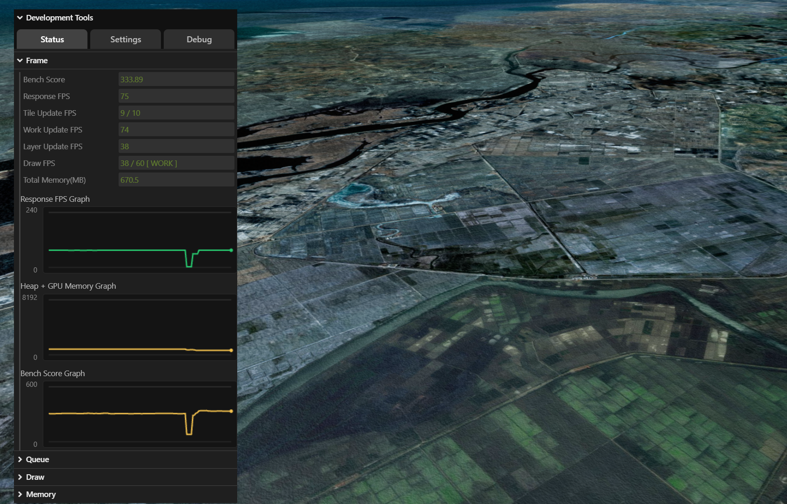

Development Tool View
목차
- Development Tool View 시작하기
- 표시, 숨김과 제거
- 탭과 폴더 구성하기
- 컨트롤러 추가하고 조회하기
- 그래프 추가하기
- 업데이트 콜백 사용하기
- 너비와 최대 높이 설정하기

1. Development Tool View 시작하기
Development Tool View는 실행 중인 U3dApp의 성능 상태를 확인하고 렌더링 설정을 조절하는 개발용 UI입니다.
이 문서는 초기화가 끝난 U3dApp 객체가 app 변수에 준비되어 있다고 가정합니다.
뷰를 생성하면 Status, Settings, Debug 탭이 기본으로 만들어지고 Status 탭이 선택됩니다.Status 탭은 프레임, 작업 큐, 드로 호출과 메모리 상태를 약 250ms 간격으로 갱신하며, Settings 탭은 품질 템플릿과 렌더링·후처리·컨트롤러 설정을 제공합니다.Debug 탭은 사용자 정의 컨트롤러나 그래프를 배치할 수 있는 빈 탭입니다.
API
U3dApp.createDevToolView() : Development Tool View를 생성하고 앱에 등록하며, 이미 생성되어 있으면 기존 뷰를 반환합니다.
반환값
return(UDevToolView) : 생성되었거나 기존에 등록된 Development Tool View
API
U3dApp.getDevToolView() : 앱에 등록된 Development Tool View를 조회합니다.
반환값
return(UDevToolView | undefined) : 등록된 뷰이며, 생성 전이거나 제거된 뒤에는undefined
1. 기본 사용 예제
createDevToolView()는 앱의 컨테이너가 준비되어 있어야 뷰를 생성할 수 있습니다.
실제 구현에서는 컨테이너가 없으면 undefined가 반환될 수 있으므로 결과를 확인합니다.
const devToolView = app.createDevToolView();
if (!devToolView) {
throw new Error('Development Tool View를 생성하지 못했습니다.');
}
const createdView = app.getDevToolView();
console.log('Development Tool View 생성 완료:', createdView === devToolView);
2. 표시, 숨김과 제거
뷰는 앱 API 또는 UDevToolView API로 표시하거나 숨길 수 있습니다.
숨기면 상태, 그래프와 사용자 업데이트 콜백을 실행하는 갱신 루프도 멈추고, 다시 표시하면 루프가 재개됩니다.
removeDevToolView()는 내부의 그래프, 탭, 컨트롤러와 업데이트 콜백을 정리하고 앱의 참조를 제거합니다.
제거한 뒤 기존 UDevToolView 참조를 다시 사용하지 말고, 필요하면 createDevToolView()로 새 뷰를 생성합니다.UDevToolView.dispose()를 직접 호출하면 앱이 보관한 뷰 참조는 지워지지 않으므로, 앱에서 생성한 뷰는 U3dApp.removeDevToolView()로 제거합니다.
createDevToolView()는 이미 생성된 뷰가 있으면 그 객체를 반환하므로 여러 기능이 하나의 뷰를 공유할 수 있습니다.
현재 기능이 뷰 전체를 생성하고 소유한 경우에만 removeDevToolView()를 호출하고, 공유 뷰를 사용했다면 현재 기능이 추가한 그래프, 컨트롤러, 폴더와 탭만 제거합니다.
API
U3dApp.showDevToolView() : 뷰를 생성하지 않았다면 먼저 생성한 뒤 화면에 표시합니다.
API
U3dApp.hideDevToolView() : 생성된 뷰를 화면에서 숨깁니다.
API
U3dApp.removeDevToolView() : 생성된 뷰와 관련 자원을 제거합니다.
API
UDevToolView.show() : 현재 뷰를 화면에 표시하고 갱신 루프를 시작합니다.
API
UDevToolView.hide() : 현재 뷰를 화면에서 숨기고 갱신 루프를 중지합니다.
1. 표시, 숨김과 제거 예제
app.showDevToolView();
const devToolView = app.getDevToolView();
devToolView?.hide();
devToolView?.show();
app.removeDevToolView();
3. 탭과 폴더 구성하기
사용 목적에 맞는 탭을 만들고 탭 아래에 폴더를 추가해 컨트롤러와 그래프를 구조화할 수 있습니다.tabName을 생략하는 API는 현재 선택된 탭을 대상으로 하므로, 재사용 가능한 코드에서는 대상 탭 이름을 명시하는 것이 안전합니다.addTab()과 addFolder()는 같은 이름이 있으면 기존 항목을 반환하므로, 다른 기능이 소유한 항목을 정리하지 않도록 기능별로 고유한 이름을 사용합니다.
API
UDevToolView.hasTab(name) : 이름에 해당하는 탭이 있는지 확인합니다.
매개변수
name(string) : 확인할 탭 이름. 필수
반환값
return(boolean) : 탭이 있으면true, 없으면false
API
UDevToolView.addTab(name) : 탭을 추가하고 해당 탭을 선택합니다.
매개변수
name(string) : 추가할 탭 이름. 빈 문자열은 사용할 수 없습니다. 필수
반환값
return(GUI_TAB_INFO | undefined) : 추가한 탭 정보이며, 같은 이름의 탭이 있으면 그 탭을 선택하고 기존 정보를 반환하고 이름이 유효하지 않으면undefined
API
UDevToolView.removeTab(name) : 탭과 그 아래의 컨트롤러, 폴더, 그래프를 제거합니다.
매개변수
name(string) : 제거할 탭 이름. 필수
API
UDevToolView.addFolder(name, tabName) : 지정한 탭 아래에 폴더를 추가합니다.
매개변수
name(string) : 폴더 이름. 필수tabName(string) : 상위 탭 이름. 생략하면 현재 선택된 탭을 사용합니다.
반환값
return(THREE_GUI | undefined) : 생성되었거나 같은 이름으로 존재하는 폴더이며, 대상 탭을 찾지 못하면undefined
API
UDevToolView.removeFolder(name, tabName) : 이름에 해당하는 폴더와 그 아래의 컨트롤러 및 그래프를 제거합니다.
매개변수
name(string) : 제거할 폴더 이름. 필수tabName(string) : 폴더가 속한 탭 이름. 생략하면 모든 탭을 순서대로 검색해 처음 일치하는 폴더를 제거합니다.
반환값
return(boolean) : 폴더를 제거했으면true, 찾지 못하면false
1. 탭과 폴더 구성 예제
const devToolView = app.createDevToolView();
if (!devToolView) {
throw new Error('Development Tool View를 생성하지 못했습니다.');
}
devToolView.addTab('Custom');
devToolView.addFolder('Camera', 'Custom');
devToolView.addFolder('Layer', 'Custom');
devToolView.removeFolder('Layer', 'Custom');
devToolView.removeTab('Custom');
4. 컨트롤러 추가하고 조회하기
컨트롤러는 숫자 슬라이더, 선택 목록, 체크박스, 문자열 입력 또는 버튼으로 값을 표시하고 조절합니다.name과 value는 필수이며, 대상 탭이 없으면 생성에 실패하고 undefined를 반환합니다.
컨트롤러 이름은 조회와 그래프 연결에 사용됩니다.
여러 탭에서 같은 이름을 사용하면 탭을 지정하지 않는 조회·제거가 처음 발견한 항목만 대상으로 하므로 이름을 고유하게 정하거나 탭 범위 조회를 사용합니다.
API
UDevToolView.addController(itemOpt) : 지정한 탭 또는 폴더에 컨트롤러를 추가합니다.
매개변수
itemOpt(GUI_Contoller_OPT) : 컨트롤러 생성 옵션. 필수itemOpt.name(string) : 화면에 표시하고 조회에 사용할 이름. 필수itemOpt.value(number | string | Function | boolean) : 초기값이며, 함수를 전달하면 버튼이 만들어집니다. 필수itemOpt.tabName(string) : 상위 탭 이름. 생략하면 현재 선택된 탭을 사용합니다.itemOpt.folderName(string) : 상위 폴더 이름. 생략하면 탭 바로 아래에 추가하며, 지정한 폴더가 없으면 생성합니다.itemOpt.min(number | string[] | boolean) : 숫자 최솟값 또는 선택 목록 등의 컨트롤 구성 값itemOpt.max(number) : 숫자 최댓값itemOpt.step(number) : 숫자 증감 간격itemOpt.onChange(Function) : 값이 바뀔 때 호출되는 콜백itemOpt.onFinishChange(Function) : 사용자의 입력이 끝났을 때 호출되는 콜백itemOpt.listen(boolean) : 외부 상태 변경을 화면에 반영할지 여부. 기본값:trueitemOpt.readOnly(boolean) : 읽기 전용으로 비활성화할지 여부. 기본값:false
반환값
return(THREE_GUI_Controller | undefined) : 생성된 컨트롤러이며, 필수 옵션이나 대상 탭이 없으면undefined
반환된 THREE_GUI_Controller의 setValue(value)를 호출하면 컨트롤러에 연결된 값을 변경하고 표시를 갱신할 수 있습니다.GeOnDT.modules.d.ts에서 THREE_GUI_Controller는 현재 any로 노출되므로, 이 메서드 사용은 Development Tool View가 내부에서 사용하는 lil-gui 컨트롤러 계약을 전제로 합니다.
API
UDevToolView.getController(name) : 모든 탭에서 이름 또는 내부 속성명이 처음 일치하는 컨트롤러를 조회합니다.
매개변수
name(string) : 컨트롤러 이름. 필수
반환값
return(THREE_GUI_Controller | undefined) : 일치하는 컨트롤러이며, 없으면undefined
API
UDevToolView.getControllersInFolder(folderName, tabName) : 폴더 아래의 모든 컨트롤러를 조회합니다.
매개변수
folderName(string) : 폴더 이름. 필수tabName(string) : 상위 탭 이름. 생략하면 같은 이름의 폴더를 모든 탭에서 검색합니다.
반환값
return(THREE_GUI_Controller[]) : 일치하는 컨트롤러 목록이며, 없으면 빈 배열
API
UDevToolView.getControllersInTab(tabName) : 탭 아래 폴더에 중첩된 항목을 포함한 모든 컨트롤러를 조회합니다.
매개변수
tabName(string) : 탭 이름. 필수
반환값
return(THREE_GUI_Controller[]) : 탭의 컨트롤러 목록이며, 탭이 없으면 빈 배열
API
UDevToolView.removeController(name, tabName) : 이름에 해당하는 컨트롤러를 제거합니다.
매개변수
name(string) : 제거할 컨트롤러 이름. 필수tabName(string) : 컨트롤러가 속한 탭 이름. 생략하면 모든 탭을 순서대로 검색해 처음 일치하는 컨트롤러를 제거합니다.
반환값
return(boolean) : 컨트롤러를 제거했으면true, 찾지 못하면false
1. 컨트롤러 추가 예제
const devToolView = app.createDevToolView();
if (!devToolView) {
throw new Error('Development Tool View를 생성하지 못했습니다.');
}
devToolView.addTab('Custom');
devToolView.addFolder('Render', 'Custom');
const maxProcessController = devToolView.addController({
name: 'Custom Max Process',
value: app.getMaxProcess(),
min: 1,
max: 32,
step: 1,
tabName: 'Custom',
folderName: 'Render',
onFinishChange: (value) => {
app.setMaxProcess(value);
}
});
const shadowController = devToolView.addController({
name: 'Custom Shadow',
value: app.isUseShadow(),
tabName: 'Custom',
folderName: 'Render',
onChange: (value) => {
app.setShadow(value);
}
});
const logButton = devToolView.addController({
name: 'Log Current Settings',
value: () => {
console.log({
maxProcess: app.getMaxProcess(),
shadow: app.isUseShadow()
});
},
tabName: 'Custom',
folderName: 'Render'
});
if (!maxProcessController || !shadowController || !logButton) {
throw new Error('컨트롤러를 생성하지 못했습니다.');
}
const controller = devToolView.getController('Custom Max Process');
const folderControllers = devToolView.getControllersInFolder('Render', 'Custom');
const tabControllers = devToolView.getControllersInTab('Custom');
console.log(controller, folderControllers.length, tabControllers.length);
devToolView.removeController('Log Current Settings', 'Custom');
5. 그래프 추가하기
그래프는 같은 탭에 이미 존재하는 컨트롤러의 값을 시간에 따라 추적합니다.
따라서 컨트롤러를 먼저 생성하고 traceName에는 그 컨트롤러의 이름을 전달해야 합니다.
그래프는 뷰가 표시된 동안 약 250ms 간격으로 갱신됩니다.
추적 값은 숫자로 변환되고 상한과 하한 범위로 보정되며, 숫자로 변환할 수 없는 값은 0으로 처리됩니다.
API
UDevToolView.addGraph(title, traceName, opt) : 컨트롤러 값을 추적하는 그래프를 추가합니다.
매개변수
title(string) : 그래프 제목이며 제거할 때 식별자로 사용합니다. 필수traceName(string) : 같은 탭에서 추적할 컨트롤러 이름. 필수opt(GUI_GRAPH_OPT) : 그래프 생성 옵션. 기본값:{}opt.tabName(string) : 그래프와 추적 컨트롤러가 속한 탭. 생략하면 현재 선택된 탭을 사용합니다.opt.folderName(string) : 그래프를 넣을 폴더 이름. 폴더가 없으면 생성합니다.opt.upperValue(number) : 그래프 상한. 기본값:60opt.lowerValue(number) : 그래프 하한. 기본값:0opt.lineColor(string) : CSS 색상 형식의 선 색. 기본값:#67d5b5opt.maxPoints(number) : 보관하고 표시할 최대 측정값 수. 기본값:120, 최솟값:1
반환값
return(HTMLCanvasElement | undefined) : 생성된 그래프 캔버스이며, 대상 탭이나 추적 컨트롤러를 찾지 못하면undefined
API
UDevToolView.removeGraph(title) : 제목이 일치하는 그래프를 모두 제거합니다.
매개변수
title(string) : 제거할 그래프 제목. 필수
removeGraph()는 탭 범위를 받지 않고 모든 탭에서 같은 제목의 그래프를 제거하므로 그래프 제목도 기능별로 고유하게 사용합니다.
API
UDevToolView.removeAllGraph() : 뷰에 추가된 모든 그래프를 제거합니다.
1. 컨트롤러 값을 그래프로 추적하는 예제
기존 HTML 예제처럼 Status 탭의 Bench Score를 다른 탭에서 바로 추적하면 대상 탭에서 컨트롤러를 찾지 못해 그래프 생성에 실패합니다.
다음 예제는 사용자 컨트롤러와 그래프를 같은 탭에 만든 뒤 앱의 벤치마크 점수를 갱신합니다.
const devToolView = app.createDevToolView();
if (!devToolView) {
throw new Error('Development Tool View를 생성하지 못했습니다.');
}
devToolView.addTab('Custom');
devToolView.addFolder('Stats', 'Custom');
const getBenchScore = () => {
const score = Number(app.getBenchMark()?.totalScore);
return Number.isFinite(score) ? score : 0;
};
const benchController = devToolView.addController({
name: 'Custom Bench Score',
value: getBenchScore(),
tabName: 'Custom',
folderName: 'Stats',
listen: true,
readOnly: true
});
if (!benchController) {
throw new Error('추적할 컨트롤러를 생성하지 못했습니다.');
}
const stopUpdate = devToolView.onUpdate(() => {
benchController.setValue(getBenchScore());
});
const graph = devToolView.addGraph('Custom Bench Score Graph', 'Custom Bench Score', {
tabName: 'Custom',
folderName: 'Stats',
upperValue: 600,
lowerValue: 0,
lineColor: '#67d5b5',
maxPoints: 120
});
if (!graph) {
stopUpdate();
throw new Error('그래프를 생성하지 못했습니다.');
}
// 더 이상 추적하지 않을 때 실행합니다.
stopUpdate();
devToolView.removeGraph('Custom Bench Score Graph');
devToolView.removeController('Custom Bench Score', 'Custom');
컨트롤러만 제거해도 연결된 그래프는 자동으로 제거되지 않습니다.
개별 항목을 정리할 때는 그래프를 먼저 제거하고 컨트롤러를 제거합니다.
탭이나 폴더를 제거하면 그 범위의 그래프도 함께 제거됩니다.
6. 업데이트 콜백 사용하기
onUpdate()를 사용하면 Development Tool View의 공용 갱신 주기에 사용자 로직을 실행할 수 있습니다.
콜백은 뷰가 표시되어 있는 동안 공용 갱신 루프에서 약 250ms 간격으로 호출됩니다.
API
UDevToolView.onUpdate(callback) : 공용 갱신 루프에 콜백을 등록하고 해당 콜백만 해제하는 함수를 반환합니다.
매개변수
callback((view: UDevToolView) => void) : 갱신 때 실행할 함수. 함수가 아니면 오류가 발생합니다. 필수
반환값
return(() => void) : 등록한 콜백을 해제하는 함수
API
UDevToolView.offUpdate(callback) : 지정한 업데이트 콜백을 해제합니다.
매개변수
callback((view: UDevToolView) => void) : 해제할 콜백. 생략하면 사용자가 등록한 모든 업데이트 콜백을 해제합니다.
1. 업데이트 콜백 등록과 해제 예제
반환된 해제 함수를 보관하면 다른 사용자의 콜백을 건드리지 않고 자신이 등록한 콜백만 정리할 수 있습니다.
const devToolView = app.createDevToolView();
if (!devToolView) {
throw new Error('Development Tool View를 생성하지 못했습니다.');
}
const stopUpdate = devToolView.onUpdate((view) => {
console.log('현재 뷰 너비:', view.getWidth());
});
// 이 기능을 종료할 때 반드시 호출합니다.
stopUpdate();
7. 너비와 최대 높이 설정하기
setWidth()는 뷰와 모든 탭의 너비를 함께 변경합니다.
높이는 내용에 맞춰 자동으로 정해지며, setMaxHeight()로 최대 높이만 제한할 수 있습니다.
API
UDevToolView.setWidth(width) : Development Tool View의 너비를 설정합니다.
매개변수
width(number) : 픽셀 단위 너비. 필수
API
UDevToolView.getWidth() : 현재 Development Tool View의 너비를 조회합니다.
반환값
return(number) : 픽셀 단위 너비
API
UDevToolView.setMaxHeight(maxHeight) : Development Tool View의 CSS max-height를 설정합니다.
매개변수
maxHeight(number | string) : 숫자는 픽셀로 처리되며 문자열에는px,vh등 유효한 CSS 길이를 사용할 수 있습니다. 필수
API
UDevToolView.getMaxHeight() : 현재 Development Tool View의 CSS max-height를 조회합니다.
반환값
return(string | undefined) : 단위를 포함한 최대 높이이며, 뷰가 초기화되지 않았으면undefined
1. 너비와 최대 높이 설정 예제
const devToolView = app.createDevToolView();
if (!devToolView) {
throw new Error('Development Tool View를 생성하지 못했습니다.');
}
devToolView.setWidth(420);
devToolView.setMaxHeight('80vh');
console.log('현재 너비(px):', devToolView.getWidth());
console.log('현재 최대 높이:', devToolView.getMaxHeight());